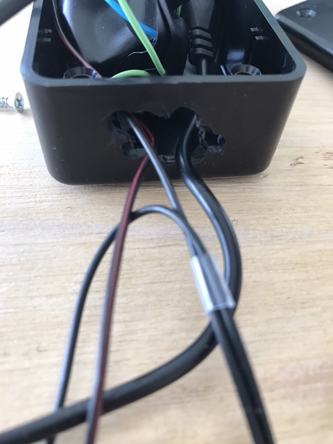
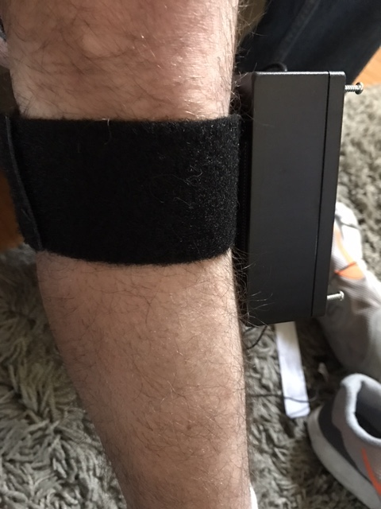

Setting up your device.
This guide is meant to serve as a walkthrough for helping you put your kit together. It will begin with assembly of all of your parts, and then help you determine a comfortable way to set up your device.
Part 1: Assembly
-
Part 2: Stimulation
Table of Contents
Part 1: Assembly
These are the parts that should be in your kit.
Make sure you have all of these parts readily available:
- Printed Circuit Board 1
- Housing Box 2
- Velcro Roll 3
- Four (4) Screws 4
- Original TENS Box 5
- Extra TENS Cable 6
- Batteries 7

Step 1
Take a seat. Grab the printed circuit board 1 and the housing box 2 . Insert the printed circuit board into the housing box. Pass the wires through the housing box holes, as demonstrated in the image below. Put the lid on the box, and screw 4 the box until it is tightly sealed.
Step 2
Wrap a strip of velcro slightly below your knee (fuzzy side on your leg). Make sure the strap is tight enough so that it won’t move, but not so tight that it will cut off your circulation. Cut the velcro strap at that length.
Step 3
Snip a piece of velcro the length of the housing box (this will be used to attach the box to your knee strap). Attach this strip of velcro to the housing box:

Step 4
Wrap the strap around your knee. Attach the velcro of the housing box to the knee-strapped velcro, with the housing box right below the knee.

Final Design:
Part 2: Stimulation
Before you begin the next few steps, make sure you THOROUGHLY READ THROUGH the instructions in the TENS box, this is important for your safety while using the device. Once completed, continue.
Step 1
Remove your assembled velcro device from your knee. Now, keep your foot dangling, and as relaxed as possible. It helps if you sit on a high stool or chair.
Step 2
Grab the electrode pads form the TENS box. Get help moving/flexing your foot up and down. This will make a muscle slightly below your knee flex, this muscle is called the tibialis anterior. Place the pads right on this muscle, one above the other - make sure the pads do not touch each other!

Step 3
Once these are placed, grab your TENS device from the box and the cable that is in the TENS box. Make sure the device is turned off. Connect this cable to the TENS device and to the two pads you placed on your muscle.
Step 4
With your foot still dangling, SLOWLY adjust the settings on the TENS device to send the electrical impulses to your muscle. Once your foot lifts up and you are comfortable with the feeling, keep track of the settings and turn the device OFF. Remove the cable from the device and the pads.
It is very helpful to practice using the TENS device so you get familiar with its settings and power. For reference, the most commonly used settings to stimulate the muscle are: FULL pulse width, 20-30Hz Pulse Rate, and a max intensity of 4.
If your foot is not lifting, make sure the electrodes are correctly placed. If the pictures on this guide are not working, try a google search for the "tibialis anterior" muscle, and get a feel for where that is on your body.
Step 5
You are now ready to use the device! Keep the pads on your muscle, and remove the cable from the pads and from the device. Now, re-attach the velcro-strapped device from earlier in the same location as before. Use the cables coming out of the box, and attach it to the pads, and to the TENS Device.
Step 6
Turn your TENS device back on, with the settings you noted from before - Don’t worry, you will only feel the stimulation when you start walking. Once on and all the cables are connected, you can start walking.
Congratulations, and happy walking!
If you are having trouble, please go to footplusplus.com/contact to let us know what is troubling you, or join our slack channel: footplusplus